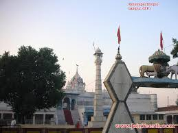
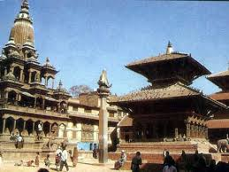

|  | Lalitpur District a part of Province No. 3, is one of the seventy-five districts of Nepal, a landlocked country of South Asia.The district, with Lalitpur as its district headquarters, covers an area of 385 km*2 and has a population (2001) of 337,785. It is one of the three districts in the Kathmandu Valley, along with Kathmandu and Bhaktapur. |
|  |